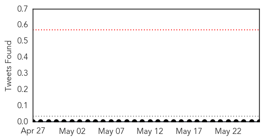
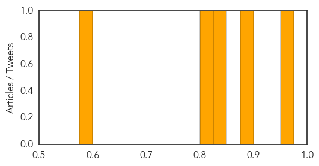
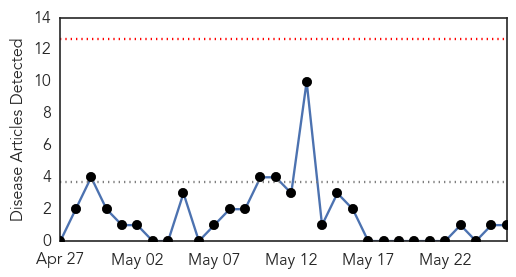

Measles
30-Day Web Trend
0 alerts, 0 warnings
30-Day Twitter Trend
0 alerts, 0 warnings

Article Locations
Article Confidences
Top Articles:
- 0.968
- Measles diagnoses increase on back of duty-free outbreak
- 0.889
- S/Leone: GAVI commits $1m for child immunization campaign
- 0.825
- Barbara Loe Fisher: Blackmail and the Medical Vaccine Exemption
- 0.802
- What the Vaccine Shills Are So Afraid Of That They Needed to Censor My Comments “As Per Facebook Community” Guideline
- 0.593
- When educated parents won’t queue up for immunisations
Top Tweets:
-
No tweets found for May 26, 2015
Swine Flu
30-Day Web Trend
0 alerts, 0 warnings

30-Day Twitter Trend
1 alerts, 0 warnings

Article Locations

Article Confidences

Top Articles:
Top Tweets:
-
No tweets found for May 26, 2015